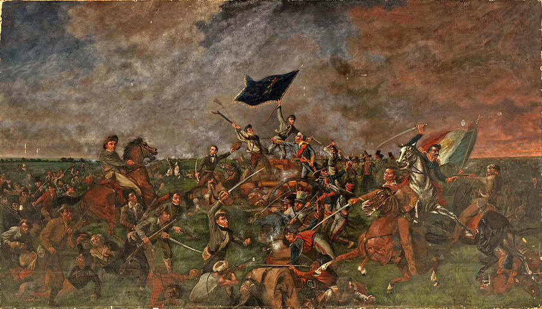

The Battle of San Jacinto
The Battle of San Jacinto, fought on April 21, 1836, near present-day Houston, Texas, was a pivotal engagement during the Texas Revolution. The conflict pitted the Texian army, led by General Sam Houston, against the Mexican forces under General Antonio López de Santa Anna. The Texians, seeking independence from Mexico, had suffered setbacks, including the famous defeat at the Alamo. However, they regrouped and launched a surprise attack on Santa Anna's army, which was encamped along the San Jacinto River.
The battle began in the afternoon with a Texian assault on the Mexican camp, catching the enemy off guard. Despite being outnumbered, the Texians quickly gained the upper hand, overwhelming the surprised Mexican troops. The fighting lasted just 18 minutes, but it resulted in a decisive victory for the Texians. Santa Anna himself was captured the following day, effectively ending the conflict.
The Battle of San Jacinto proved to be a turning point in the Texas Revolution. The stunning Texian victory secured Texas' independence from Mexico and led to the creation of the Republic of Texas. It also solidified Sam Houston's reputation as a military leader and statesman. The battle's outcome reverberated throughout North America, shaping the future of Texas and influencing relations between the United States and Mexico.
Battle Location
| Republic of Mexico | Republic of Texas | |
|---|---|---|
| Leader | Antonio Lopez de Santa Anna | Sam Houston |
| Strength | 1360 | 910 |
| Losses | 650 | 11 |
| Victorious? | No | Yes |